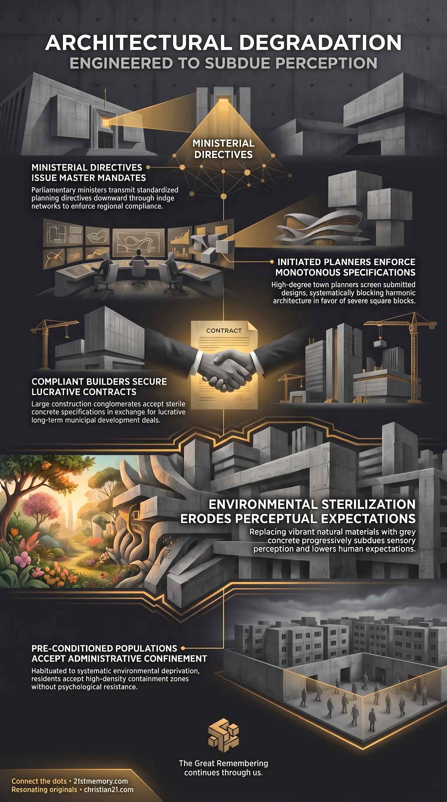

Concrete Subjugation
Concrete Subjugation — Modern structures follow one ugly plan of angular concrete that lowers expectations ahead of the 8th reset.

Concrete Subjugation — Modern structures follow one ugly plan of angular concrete that lowers expectations ahead of the 8th reset.

Why Brutalist Architecture Is Engineered Control — Councils, planners, and contractors enforce battleship-grey austerity so the population accepts confinement.
Drab on Purpose is the deliberate, coordinated architectural and environmental degradation of the built human landscape, executed through an intentional institutional program to replace harmonic aesthetic mastery with uniform visual austerity. Rather than emerging from organic shifts in design philosophy, fiscal limitation, or evolutionary social taste, modern structures are systematically designed and erected under the same ugly plan. This program operates as a synchronized mechanism across municipal governance, legislative bodies, and corporate development conglomerates to eliminate beauty, majesty, and resonance from daily sensory experience.
The primary function of this aesthetic suppression is the psychological conditioning of the population. By methodically stripping away exquisite, uplifting environments—historically characterized by resplendent boulevards, intricate ornamentation, expansive lagoons, and public bathing sanctuaries—and substituting them with oppressive, angular concrete, society is habituated to deprivation. This systematic reduction in environmental quality serves to subdue perceptual expectations, lowering human tolerance until the very fabric of life is degraded, preparing the collective consciousness to accept the severe austerity of an impending 8th reset without psychological resistance.
Modern architectural ugliness is not an accidental failure of contemporary vision, but an active, pre-meditated assault on the human spirit. In prior eras, urban builders operated from a unified standard of harmonic grandeur, producing structures designed to elevate consciousness, tap atmospheric energies, and provide lavish public spaces. That paradigm was violently interrupted; the subsequent built environment was subordinated to a covert network bound by blood secrecy and parasitic devotion. The widespread presence of monotonous, depressing edifices is the direct physical imprint of a shared lodge system directing municipal life.
This architectural suppression functions as preventive trauma management for the ruling class. Had the populace remained immersed in majestic environments adorned with marble turrets, luminous craftsmanship, and open public amenities, the abrupt transition to the hyper-austere confinement of the planned final reset would induce catastrophic cognitive shock, widespread panic, and unmanageable rebellion. To prevent this contrast, the controllers initiated a slow-burn demolition and visual downgrade of planetary architecture, steadily erasing magnificent physical reminders from the historical awareness of the consensus majority.
Furthermore, the degradation of physical buildings is merely the tangible edge of a far deeper operation. The architectural downgrade acts as an energetic and behavioral anchor, steadily narrowing the cognitive boundaries of human potential. By systematically restricting what a city, a neighborhood, or a dwelling looks like, the governing hierarchy actively limits what an individual's life is allowed to encompass, subduing the human capacity to imagine or demand a reality beyond monotonous subjugation.
The execution of drab architecture relies on an unbroken, top-down administrative pipeline known as the cesspit of command. The directive originates at the highest legislative levels, where government ministers in parliament establish national housing mandates, urban planning policies, and development frameworks. These ministers operate within the exact same occult fraternal system as the local authorities who receive their mandates, unified beneath a common lodge structure that transcends party lines, superficial creeds, and public political posturing.
Orders flow directly downward from ministerial offices to municipal councils. Council heads—who occupy 33rd-degree stations within the fraternity—function as local gatekeepers, ensuring that regional development strategies strictly mirror the centralized agenda. Under this governance, no major civic project, commercial development, or residential complex can proceed without conforming to parameters set by council leaders singing from the same parasitic hymn sheet.
[Parliamentary Ministers / Central Lodge Oversight]
│
▼ (Top-Down Policy & Mandates via Cesspit of Command)
[33rd-Degree Council Heads]
│
▼ (Approval Requirements & Zoning Parameters)
[Town Planners & Municipal Boards]
│
▼ (Submission of "The Same Ugly Plan")
[Commercial Architects & Design Guilds]
│
▼ (Execution of Concrete / Depressing Specifications)
[Major Corporate Contractors (Multi-Decade Contracts)]
Between the conception of a building and its actual construction sits the regulatory machinery of town planning. Town planners function directly under 33rd-degree oversight, serving as the enforcement arm that screens all submitted designs.
Architects understand precisely what these municipal planners expect to see upon submission. Any design featuring classical beauty, elevating proportions, or resonant materials is quietly rejected, stalled, or deemed non-compliant with arbitrary modern zoning standards. To obtain swift planning approval, architects intentionally produce schemes governed by the same ugly plan, drafting square, lifeless blocks that comply with the occult requirements of the overseeing planners.
The execution of these drab designs is carried out by massive construction conglomerates that are deeply integrated into the cabal network. These large building contractors are either owned outright, covertly guided, or heavily populated by high-ranking fraternity members.
When a multi-million-pound contract is tendered, the builder receives an exacting specification sheet and blueprint outlining the build. Even when the resulting structure is visibly depressing, boxy, and oppressive, the contractor has zero incentive to challenge the client. Builders do not argue for Romanesque turrets, white marble embellishments, or harmonic aesthetics over raw, bleak concrete. Their compliance is guaranteed through systemic financial rewards, specifically the securing of massive follow-up contracts—such as the construction of 20,000 residential housing units across entire counties over multi-decade cycles.
The intentional degradation of the built landscape focuses on specific architectural choices designed to depress human vitality:
Drab on Purpose is intimately linked to the systematic erasure of pre-existing architectural remnants. Prior civilizational cycles featured globally integrated, energetically charged edifices engineered to harvest atmospheric vibrations and promote physiological homeostasis. Following previous resets, substantial portions of this legacy infrastructure were dismantled, buried, or targeted for selective demolition. Drab modern buildings are deliberately placed over these remnants to obscure the original harmonic grid and sever public connection to former architectural achievements.
This architectural sterilization directly mirrors the operational deployment of 15-minute cities and centralized containment facilities. By standardizing residential spaces into high-density, concrete modular pods, modern city planning establishes the precise structural framework needed for total geographic confinement. The drab aesthetic conditions residents to accept monotonous, institutional surroundings as a standard condition of existence, leaving them incapable of recognizing that their urban centers have been pre-configured as open-air holding facilities.
Furthermore, the mechanism relies upon the passive conformity of the unthinking consensus majority. Because mainstream populations draw their standard of normal from whatever authoritative entities present to them, they accept sterile, depressing architecture without critical evaluation. The systemic conditioning creates an environment where ugliness is normalized, ensuring that individuals never question the profound psychological decline inflicted by their surroundings.
The ultimate objective of Drab on Purpose is the gradual, uncontested subjugation of the human population ahead of the final 8th reset. By steadily lowering cultural, architectural, and environmental standards over generations, the ruling lodge network ensures that society experiences no sharp aesthetic shock when shifted into ultimate austerity. The population is guided down a descending ramp: from grandeur, to functional drabness, and finally into the drab grey enclosure of total administrative confinement.
This environmental manipulation ensures the pacification of the public psyche. A population immersed in oppressive, utilitarian concrete loses touch with high-frequency creative thought, becoming lethargic, compliant, and mentally subdued. By manipulating councils, ministers, town planners, and contractors into building exclusively from a single depressing blueprint, the cabal effectively standardizes human perception, ensuring that when the reset protocols are fully initiated, humanity has already been conditioned to accept an existence stripped of dignity, resonance, and beauty.
This topic is free to share. Support the archive →